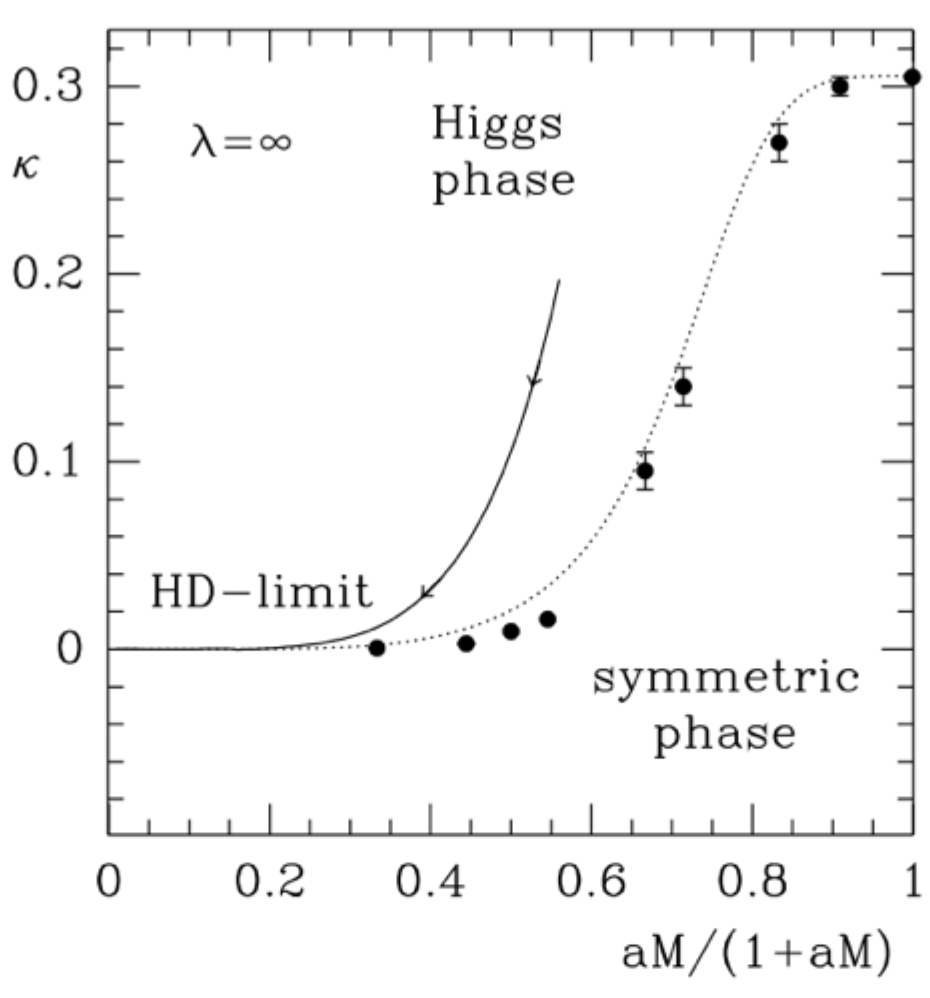

Interests
My research interests lie in lattice field theory, particularly lattice quantum chromodynamics (QCD), gradient flow and renormalization methods, numerical algorithms, and high-performance computing using MPI/OpenMP and GPU offload where relevant.
Lattice
RG / β-function
HPC
Data analysis
Projects
Citations & CV →Gradient Flow Scale Setting in Lattice QCD
High-precision scale setting and continuous β-function analysis using gradient flow.

Higher-Derivative Scalar Field Theories
Non-perturbative lattice study of higher-derivative theories at strong coupling.

Publications
Full list →Put a short list here (3–8 items), each as one line.